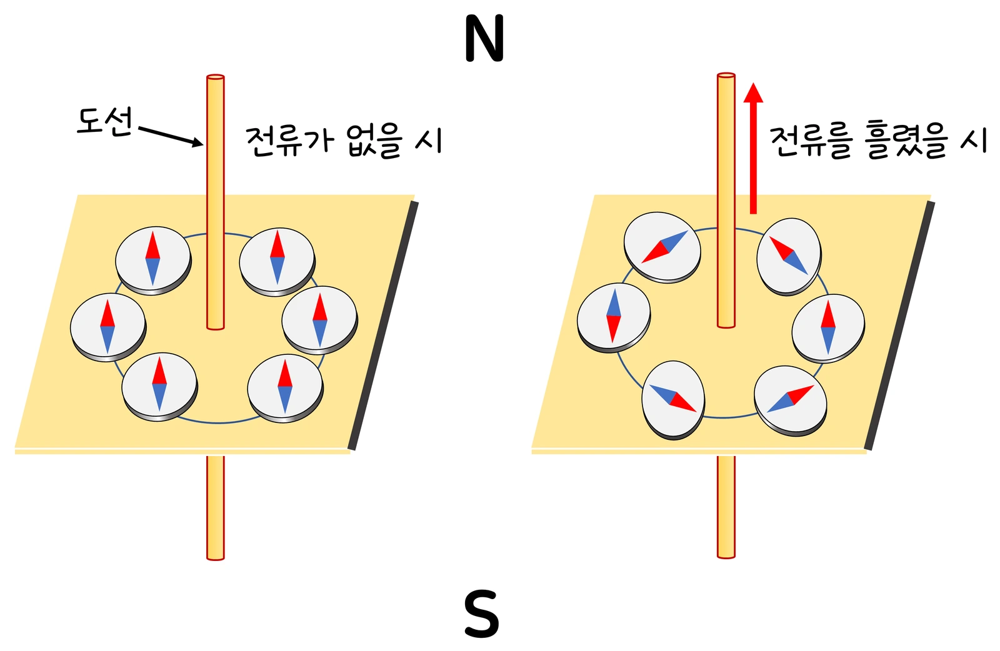

고3 전자기와 양자 · Ⅰ 전자기적 상호작용 · 웹툰 3화 「전류가 그리는 원」
실험에서 직선 도선·원형 도선·솔레노이드에 전류(1~10 A)를 흘리고 거리(2~20 cm)·반지름(2~10 cm)·감은 수(200~1 000회/0.5 m)를 바꾸며 자기력계(0.01 μT)로 자기장을 쟀습니다. B는 모두 전류에 비례했고 직선 도선은 거리에 반비례, 솔레노이드 내부는 균일하며 100배 이상 셌습니다. 오른손 법칙과 세 가지 식을 정리합니다.
실험 데이터 되짚기
μ₀ = 4π × 10⁻⁷ T·m/A. 지구 자기장 약 50 μT. 솔레노이드 길이 0.5 m.
| 모양 | 전류 | 거리·반지름·감은 수 | B | 비교 |
|---|---|---|---|---|
| 직선 도선 | 2 A | r = 5 cm | 8 μT | 지구 자기장의 1/6 |
| 직선 도선 | 2 A | r = 10 cm | 4 μT | 거리 2배 → 절반 |
| 직선 도선 | 10 A | r = 5 cm | 40 μT | 전류 5배 → 5배 |
| 원형 도선 | 2 A | R = 5 cm | 25 μT | 같은 거리의 직선보다 π배 |
| 솔레노이드 | 2 A | 500회 / 0.5 m (n = 1 000) | 2.5 mT | 직선의 300배 |
| 솔레노이드 | 2 A | 1 000회 / 0.5 m | 5.0 mT | 철심을 넣으면 수백~수천 배 더 |
B–I 그래프는 모두 원점을 지나는 직선, B–r(직선 도선)은 반비례 곡선. 솔레노이드 내부는 위치·반지름과 무관하게 균일합니다. 실제 측정에는 지구 자기장 50 μT가 항상 겹쳐 있습니다.
움직이는 전하(전류)는 주위에 자기장을 만듭니다(외르스테드, 1820). 수직 도선 둘레의 쇳가루는 동심원 무늬 — 자기력선은 도선을 감싸는 원이고, 방향은 오른손 법칙(엄지를 전류 방향으로 하면 감아쥔 손가락이 자기장 방향), 촘촘할수록 셉니다. 세기는 전류에 비례하고 도선 모양에 따라 다릅니다. 직선 도선: B = μ₀I/2πr = 2 × 10⁻⁷ × I/r — 거리에 반비례. 예측 게임 — 거리가 2배면? 제로 ‘전기장처럼 1/4’, 뭉치 ‘1/2’: 점전하의 전기장은 사방으로 퍼져 거리 제곱에 반비례하지만 긴 직선 도선의 자기장은 원통 모양으로 퍼져 거리에 반비례합니다. 원형 도선 중심: B = μ₀I/2R(반지름에 반비례). 솔레노이드 내부: B = μ₀nI(n = 단위 길이당 감은 수, 균일) — 막대자석처럼 N·S극이 생기고 철심을 넣으면 강한 전자석. 나란한 두 도선 사이 자기력선이 성긴지(같은 방향 전류, 상쇄) 촘촘한지(반대 방향, 보강)로 전류 방향을 추리할 수 있습니다.
교재 그림
전류를 흘리면 나침반이 도선을 감싸며 돈다

왼쪽: 전류가 없으면 모두 북쪽(지구 자기장). 오른쪽: 위로 전류를 흘리면 오른손 법칙대로 위에서 볼 때 시계 반대 방향으로 감싸는 자기장이 생겨, 지구 자기장과 합쳐진 방향을 가리킵니다.
움직여 보기
직선 도선 둘레의 나침반 — 지구 자기장과 겹치면?
B = 2 × 10⁻⁷ × I ÷ r: 2 A·5 cm면 8 μT, 거리 2배면 절반. 10 A·4 cm면 50 μT로 지구 자기장과 같아져 도선 북쪽·남쪽 나침반이 45° 돕니다(예제). 동쪽·서쪽 나침반은 두 자기장이 같은 방향 또는 반대 방향이라 돌지 않거나 뒤집힙니다. 전류 방향을 바꿔 오른손 법칙도 확인해 보세요(화면은 위에서 본 모습, 도선은 수직).
직선 도선 2 A, 5 cm: 8 μT — 지구 자기장(약 50 μT)보다 작아 나침반이 조금만 움직입니다. 원형 도선 2 A, 반지름 5 cm: 25 μT. 솔레노이드 500회/0.5 m, 2 A: 2.5 mT — 100배 이상 세고 철심을 넣으면 수백~수천 배 더. 전자석·릴레이·스피커·MRI(초전도 솔레노이드 1.5~3 T)가 전류의 자기장을 쓰고, 고압 송전선 아래 자기장은 수 μT로 지구 자기장보다 약하며 나침반은 근처 전류·철에 쉽게 흔들립니다. 이 자기장 속의 다른 도선은 힘을 받는데(F = BIL) 그것이 4화의 로런츠 힘입니다.
움직여 보기
같은 전류, 다른 모양 — 자기장 크기 감각
2 A로 직선 5 cm 8 μT, 원형(반지름 5 cm) 25 μT, 솔레노이드(1 000회/m) 2.5 mT — 막대는 로그 눈금이라 한 칸이 10배입니다. 솔레노이드는 감은 수를 2배로 하면 B도 2배(5.0 mT). 직선 도선은 무한히 길고, 솔레노이드는 아주 길다고 본 값입니다.
직선 도선은 무한히 길다고, 솔레노이드는 길이가 반지름보다 훨씬 길다고 가정했습니다. 실제 유한한 도선·짧은 코일에서는 끝 부분에서 자기장이 약해지고 밖으로 새며(솔레노이드 끝은 내부의 절반), 실제 측정에는 지구 자기장(50 μT)이 항상 겹쳐 있어 직선 도선 실험은 이를 빼거나 방향을 맞춰야 합니다. 교과서의 B = 2 × 10⁻⁷ × I/r는 μ₀/2π를 계산해 둔 값입니다.
μ₀ = 4π × 10⁻⁷ T·m/A · 2 A·5 cm 직선 8 μT · 원형 25 μT · 솔레노이드 1 000/m 2.5 mT · 지구 50 μT · MRI 1.5~3 T
“3라운드! 도선에서 거리가 2배가 되면 자기장은? 난 1/2.” “전기장이 거리 제곱에 반비례했으니까 자기장도 1/4!”
웹툰 3화 · 원통 모양으로 퍼지면 거리에 반비례 — 제로 1 : 2 뭉치
“점전하의 전기장은 사방으로 퍼져서 거리 제곱에 반비례하지만, 긴 직선 도선의 자기장은 원통 모양으로 퍼져서 거리에 반비례해. 모양이 다르면 규칙도 달라.”
웹툰 3화 · 10 A·0.1 m → 2 × 10⁻⁵ T (지구 자기장과 비슷)
B = 2 × 10⁻⁷ × I/r → I = 50 × 10⁻⁶ × 0.04 ÷ 2 × 10⁻⁷ = 10 A. 그때 나침반은 두 자기장의 벡터 합 방향으로 45° 돌아갑니다 — 외르스테드 실험의 정량 버전.
n = 4 000/m → B = 4π × 10⁻⁷ × 4 000 × 3 = 15 mT. 철심: 500 × 15 mT = 7.5 T 수준(실제로는 철의 포화로 약 1.5~2 T에서 멈춤).